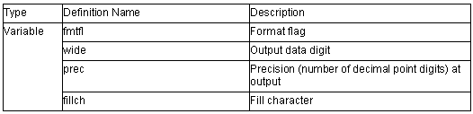

ios_base Class

1. ios_base::fmtflags
Defines the format control information relating to input/output processing.
The definition for each bit mask of fmtflags is as follows.
const ios_base::fmtflags ios_base::boolalpha = 0x0000;
const ios_base::fmtflags ios_base::skipws = 0x0001;
const ios_base::fmtflags ios_base::unitbuf = 0x0002;
const ios_base::fmtflags ios_base::uppercase = 0x0004;
const ios_base::fmtflags ios_base::showbase = 0x0008;
const ios_base::fmtflags ios_base::showpoint = 0x0010;
const ios_base::fmtflags ios_base::showpos = 0x0020;
const ios_base::fmtflags ios_base::left = 0x0040;
const ios_base::fmtflags ios_base::right = 0x0080;
const ios_base::fmtflags ios_base::internal = 0x0100;
const ios_base::fmtflags ios_base::adjustfield = 0x01c0;
const ios_base::fmtflags ios_base::dec = 0x0200;
const ios_base::fmtflags ios_base::oct = 0x0400;
const ios_base::fmtflags ios_base::hex = 0x0800;
const ios_base::fmtflags ios_base::basefield = 0x0e00;
const ios_base::fmtflags ios_base::scientific = 0x1000;
const ios_base::fmtflags ios_base::fixed = 0x2000;
const ios_base::fmtflags ios_base::floatfield = 0x3000;
const ios_base::fmtflags ios_base::_fmtmask = 0x3fff;
2. ios_base::iostate
Defines the input/output state of the stream buffer.
The definition for each bit mask of iostate is as follows.
const ios_base::iostate ios_base::goodbit = 0x0;
const ios_base::iostate ios_base::eofbit = 0x1;
const ios_base::iostate ios_base::failbit = 0x2;
const ios_base::iostate ios_base::badbit = 0x4;
const ios_base::iostate ios_base::_statemask = 0x7;
3. ios_base::openmode
Defines open file mode.
The definition for each bit mask of openmode is as follows.
const ios_base::openmode ios_base::in = 0x01; Opens the input file.
const ios_base::openmode ios_base::out = 0x02; Opens the output file.
const ios_base::openmode ios_base::ate = 0x04; Seeks for eof only once after
the file has been opened.
const ios_base::openmode ios_base::app = 0x08; Seeks for eof each time the
file is written to.
const ios_base::openmode ios_base::trunc = 0x10; Opens the file in overwrite mode.
const ios_base::openmode ios_base::binary = 0x20; Opens the file in binary mode.
4. ios_base::seekdir
Defines the seek state of the stream buffer.
Determines the position to continue the input/output of data in a string literal.
The definition for each bit mask of seekdir is as follows.
const ios_base::seekdir ios_base::beg = 0x0;
const ios_base::seekdir ios_base::cur = 0x1;
const ios_base::seekdir ios_base::end = 0x2;
5. void ios_base::ec2p_init_base()
The initial settings are as follows.
fmtfl = skipws | dec;
wide = 0;
prec = 6;
fillch = ' ';
6. void ios_base::void _ec2p_copy_base(ios_base & ios_base_dt)
Copies ios_base_dt.
7. ios_base::ios_base()
Constructor of class ios_base.Calls Init::Init().
8. ios_base::~ios_base()
Destructor of class ios_base.
9. ios_base::fmtflags ios_base::flags() const
References format flag (fmtfl).
Return value: Format flag (fmtfl)
10.ios_base::fmtflags ios_base::flags(fmtflags fmtflg)
Sets fmtflg&format flag (fmtfl) to format flag (fmtfl).
Return value: Format flag (fmtfl) before setting
11.ios_base::fmtflags ios_base::setf(fmtflags fmtflg)
Sets fmtflg to format flag (fmtfl).
Return value: Format flag (fmtfl) before setting
12. ios_base::fmtflags ios_base::setf(fmtflags fmtflg, fmtflags mask)
Sets mask&fmtflg to format flag (fmtfl).
Return value: Format flag (fmtfl) before setting.
13. void ios_base::unsetf(fmtflags mask)
Sets ~mask&format flag (fmtfl) to format flag (fmtfl).
14.char ios_base::fill() const
References fill character (fillch).
Return value: Fill character (fillch)
15. char ios_base::fill(char ch)
Sets ch as fill character (fillch).
Return value: Fill character (fillch) before setting
16. int ios_base::precision() const
References precision (prec).
Return value: Precision (prec)
17.streamsize ios_base::precision( streamsize preci)
Sets preci as precision (prec).
Return value: Precision (prec) before setting
18. streamsize ios_base::width() const
References width (wide).
Return value: Width (wide)
19. streamsize ios_base::width(streamsize wd)
Sets wd as width (wide).
Return value: Width (wide) before setting